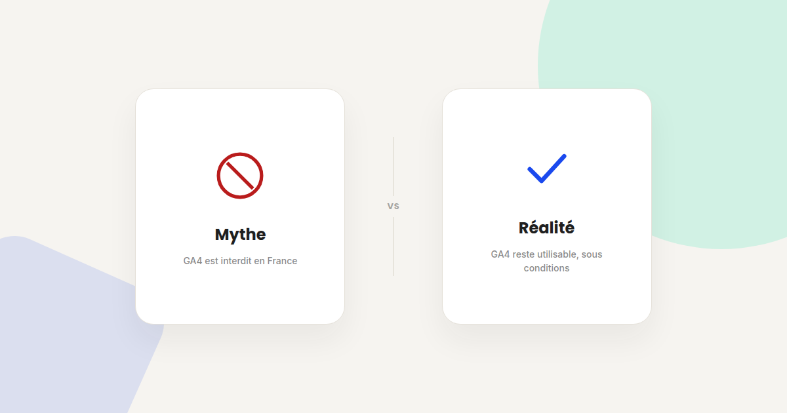

Matomo peut-il vraiment remplacer GA4 ? 4 idées reçues à corriger
Depuis que la CNIL a jugé Google Analytics non conforme au RGPD dans sa configuration standard, Matomo revient systématiquement dans les discussions comme solution de repli. Certaines idées reçues sur ce sujet méritent d'être corrigées avant de migrer.

La décision de la CNIL de février 2022 sur Google Analytics a été largement relayée, souvent de façon simplifiée. Voici quatre affirmations que j'entends régulièrement chez mes clients, et ce qu'il faut vraiment en retenir.
Mythe n°1 : « Google Analytics est interdit en France »
Réalité : la CNIL n'a pas interdit l'outil lui-même, elle a mis en demeure un site précis pour le transfert de données vers les États-Unis dans une configuration donnée, en l'absence de garanties suffisantes. Depuis, Google a fait évoluer ses conditions contractuelles et propose des options de traitement en Europe. La situation reste évolutive et juridiquement nuancée — ce n'est pas une interdiction pure et simple gravée dans le marbre.
Mythe n°2 : « Passer sur Matomo règle le problème RGPD automatiquement »
Réalité : Matomo hébergé en Europe (ou en auto-hébergement) évite effectivement la question du transfert hors UE qui a motivé la décision de la CNIL. Mais changer d'outil ne dispense pas du reste des obligations RGPD : recueil du consentement, information claire du visiteur, durée de conservation limitée. Un Matomo mal configuré reste non conforme, exactement comme un GA4 mal configuré.
Mythe n°3 : « Matomo offre les mêmes fonctionnalités que GA4 »
Réalité : Matomo couvre bien le tracking d'événements, les entonnoirs et les rapports d'audience classiques. En revanche, l'écosystème d'intégrations publicitaires (Google Ads, import de conversions cross-plateforme) et les capacités de machine learning prédictif de GA4 (scores de probabilité d'achat, d'attrition) n'ont pas d'équivalent direct sur Matomo à ce jour. Le choix dépend donc aussi de l'usage réel qui est fait de ces fonctionnalités avancées.
Mythe n°4 : « Une fois migré, on peut comparer directement l'historique GA4 et Matomo »
Réalité : les deux outils ne mesurent pas exactement de la même façon (définition d'une session, traitement du rebond, fenêtre d'attribution). Une comparaison directe des chiffres avant/après migration donnera presque toujours une différence, sans que ça ne signifie une hausse ou une baisse réelle du trafic. Faites tourner les deux outils en parallèle plusieurs semaines avant de couper l'ancien, pour calibrer l'écart de mesure entre les deux.
Ce qui doit vraiment motiver la décision
Le choix entre GA4 et Matomo ne devrait pas se faire par réaction à un titre de presse, mais en fonction de critères concrets : l'importance stratégique d'héberger les données en Europe pour votre secteur, votre appétence pour l'open source et l'auto-hébergement, et l'usage réel que vous faites des fonctionnalités avancées de GA4 qui n'ont pas d'équivalent sur Matomo.
FAQ
Google Analytics est-il aujourd'hui totalement conforme au RGPD ?
La situation reste nuancée et évolutive juridiquement. Google a fait évoluer ses conditions, mais chaque configuration doit être évaluée au cas par cas plutôt que de considérer le sujet comme définitivement clos.
Migrer vers Matomo est-il complexe techniquement ?
La mise en place de base est relativement simple, en particulier en version hébergée (Matomo Cloud). L'auto-hébergement demande davantage de ressources techniques pour la maintenance et les mises à jour.
Peut-on utiliser GA4 et Matomo en parallèle ?
Oui, et c'est même recommandé lors d'une migration, le temps de calibrer l'écart de mesure entre les deux outils avant de couper l'ancien.
Vous hésitez entre GA4 et une alternative RGPD ?
Pour aller plus loin, voir la page Analytics, la page Consultant GA4, et l'article RGPD et marketing digital.
Pour continuer sur ce sujet.